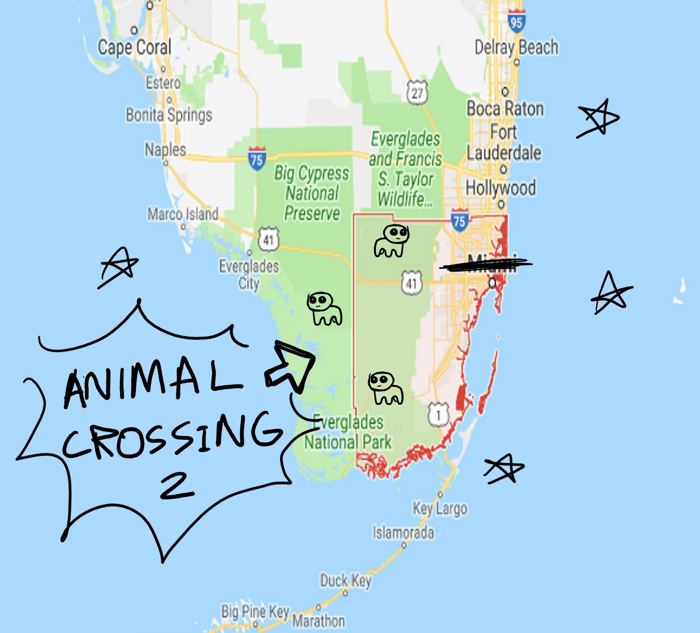
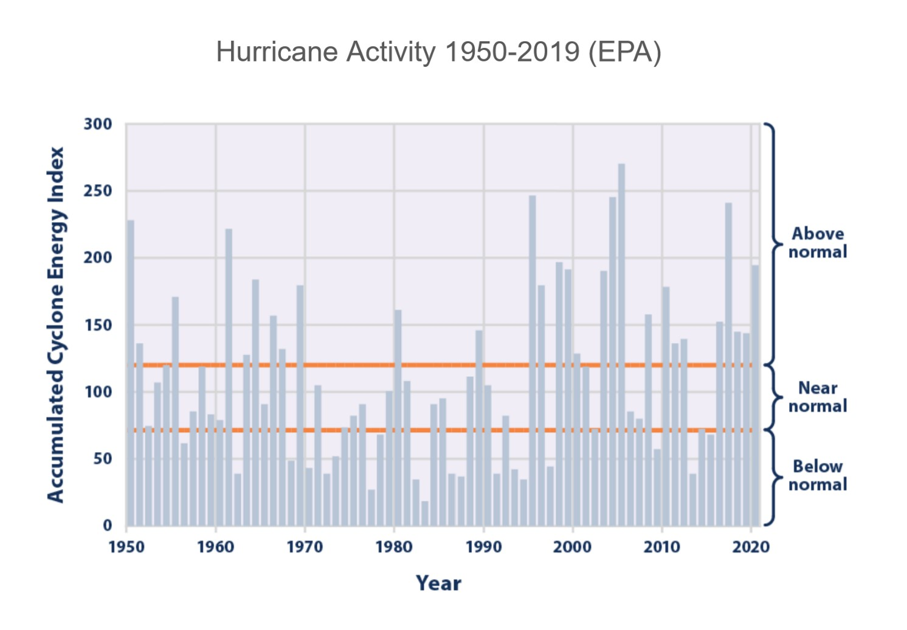

Animal Crossing 2 is located in Florida and has a population of 100,000.
A great amount of Animal Crossing 2's revenue comes from our tourism industry. We are home to a rather popular theme park, but many are attracted to this city by the plentiful public parks and the easy access to all parts of the city. Citizens can make a living in the many shops & restaurants around the city, as well as employment opportunities within the finance industry.
We do not have the necessary means to grow quality food directly in the city, so the majority of our produce is purchased from local farming communities as well as imported produce from out of state our other countries.
Animal Crossing 2 is a place focused first and foremost on accessibility & environmentally friendly forms of transportation.
Even distribution of necessary resources throughout the city. If a citizen is evicted from their home without a clear or fair reason, they may take their landlord to court over the matter free of charge. Murder & theft & such are not recommended.
Climate change has resulted in an increase of sea levels everywhere, & our coastal city is suffering from considerably more floods because of this. Invasive species are also a threat to the native wildlife.
Hurricanes are naturally caused by a low pressure area moving through warm waters which attracts rain and thunderstorms. This causes air to rise into the storm and create more thunderstorms and clouds which releases more heat to power the storm. Florida sticks out and is in direct proximity of hurricane activity which explains why it experiences hurricanes more often than other states. Flooding as a result of hurricanes is also a threat. While hurricanes are caused naturally, we believe warming waters as a result of climate change is increasing the frequency of hurricanes.
From 2000 to the present, hurricanes have resulted in over 120 billion dollars in damages. There have been over 200 deaths and many more people injured or displaced. Many homeowners also struggle to gain access to insurance or resources that will help them prepare for or navigate the effects of a hurricane. Housing is currently not sufficient to protect against hurricanes either. Loss of natural shelter and environments will also decrease the biodiversity of native species.
Alligator attacks are natural occurrences. The creatures simply live here.
Tourists may be frightened by alligator attacks & decide on a different location for their summer vacation, throwing a wrench in our tourism industry. The health of citizens & visitors alike is affected by these attacks as well because those beasts will hurt them. Unfortunate!
Created by Siegfried and Weitong